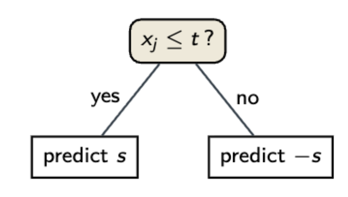
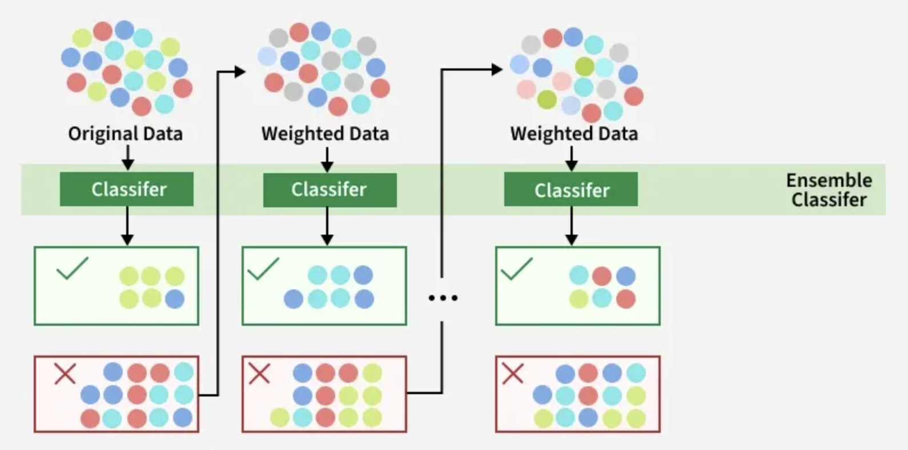
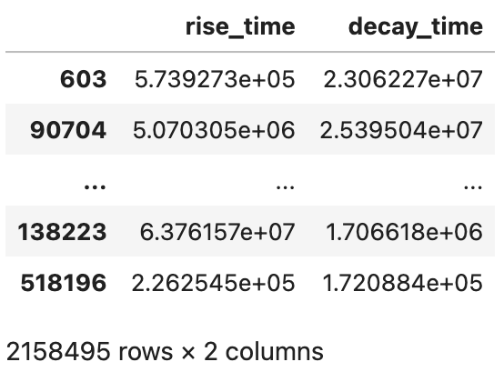
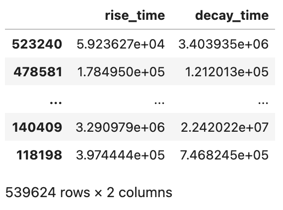
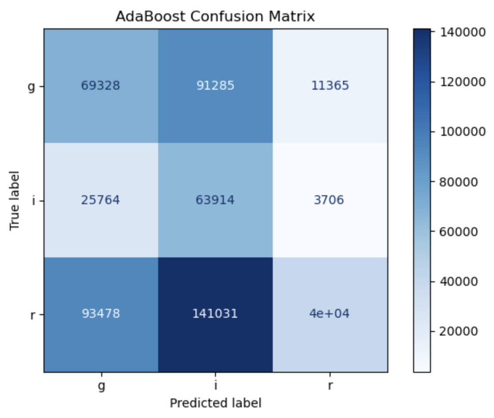
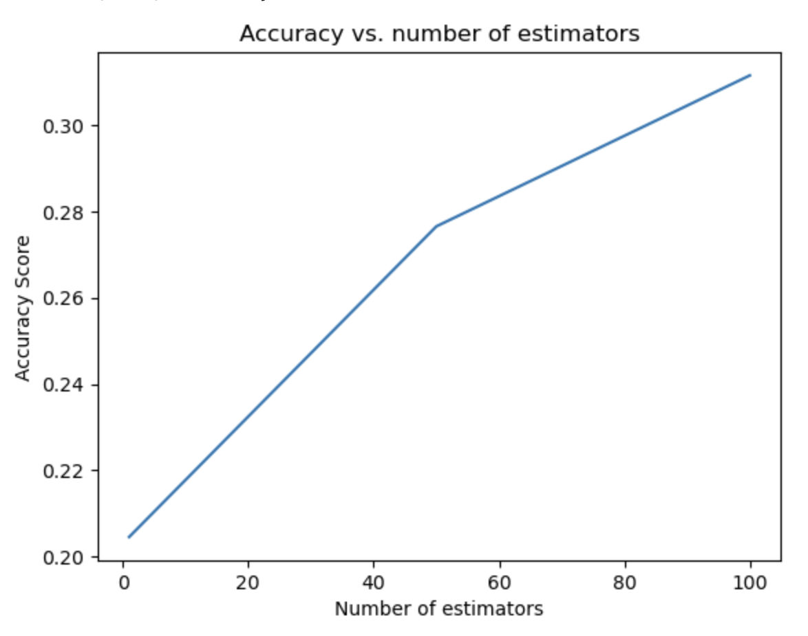

Overview
Adaptive Boosting, or AdaBoost, works with a set of training data in sequence to improve the weighted error of the predictions. It starts with a set of training data and initial weights, and then applies a weak learner repeatedly until the weighted errors are optimized. The weights for misclassified predictions are increase, while the weights for correctly classified predictions are decreased. Once the new weights are calculated the weak learner is applied to the same data once again. This method is different than bagging in multiple ways. Bagging takes many deep trees and averages the results, while boosting takes a single decision stump and continuously re-weights the predictions. Decision stumps in this case correspond to a decision tree that has only a single split and minimizes the weighted error. The final vote from an AdaBoost classifier predicts a class by measuring the sign of the weighted vote. AdaBoost attempts to minimize the exponential loss through this algorithm.


Data Prep
Since AdaBoost will predict numeric labels of observations within the dataset, numeric data is required. In the context of astrophysical transient detections, one useful label that is presented in the data is the photometric band of each observation. These bands (g, r, i) describe the wavelength ranges that each transient detection was observed in. In particular, these correspond to 400-550nm, 550-700nm, and 700-850nm, respectively. These are measured using transmission curves, which ultimately come from optical inference filters built into the instrument. All of these wavelength ranges are found in the optical/visible range of the electromagnetic spectrum, with a small fraction occupying the near-infrared range. The goal of training an AdaBoost classifier here is to see whether or not the photometric bands of transient detections can be predicted based on transient rise/decay times. To obtain more sky coverage than before, 10 randomly-selected partitions will be used to train the NB classifier, rather than the first 10 partitions of data which occupy a narrow region on the sky. A snapshot of the data is shown below in Figure 3, which includes the transient rise/decay times and the photometric bands (used as labels). Figure 4 shows the labels associated with this dataset, and Figures 5 and 6 show the datasets split into tranining and testing data, respectively. This data is a result of the data cleaning that was described in the DataPrep_EDA tab. The full 10 partition dataset contains 2,634,436 rows. Finally, in order to construct a decision tree, the data need to be split into testing and training datasets. This was accomplished by allocating 20% of the dataset to testing data, and the other 80% to training data. The split was chosen randomly, but can be reproduced using a random_state identifier. Finally, the split attempts to keep roughly the same proportions of each label in both datasets.




- Lightcurves ("s3://ipac-irsa-ztf/ztf/enhanced/dr24/lc/hats")
Code
The code used for this project can be found under the "AdaBoost" header in the following jupyter notebook, which has been pushed to this github repository.
View Jupyter NotebookResults


Conclusions
The figures above suggest that there could be a predictable relationship between transient rise/decay times and the photometric band of observation. The AdaBoost classifier still makes many incorrect predictions, resulting in a low accuracy. The accuracy could be improved by increasing the number of estimators, although remains low compared to some of the unsupervised learning models.